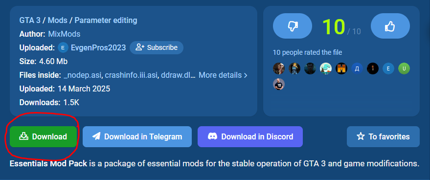

Home | Games | Code | About me
We do not request personal information and we do not install software automatically. Any downloads are provided by external websites under their own responsibility.
First of all, you'll need to know that GTA 3 is a old game and it has some limitantions, because of that, we will install Essentials, which will fix some bugs and add support to mods installations, let's continue:
We will Download Essentials in this SITE
Go down and click in the Download button:
Then it will open a little tab down here, click in this other download button:
Go down and wait while the timer goes to 0
And finally click in this final download button:

It will download automatically and will appear the password to the .zip, DON'T FORGET IT!
Now, you will have the .zip
Right button in the file, click "Extract here"
It will ask for a password, write the password that was in the site (In my case it was "libertycity")
It will now have another .zip, extract this file in some folder and you will have these files:
Press Ctrl + A and then right button in the files, in this menu click "Cut"
It's the final step! go to your GTA 3 folder and then paste it.
Now you can put your mods in your GTA 3!, just be sure to put all the mods in the modloader folder (if it needs to be there)
An example is GTA V Menu Style to GTA 3, do all the steps i did until the last one, that you'll need to paste it in modloader folder (Warning: the mod files need to be in a folder, so the files will be in modloader/modname)
If it works, congratulations, now you have mods in your gta 3!
I didn't wrote right now...
I didn't wrote right now...